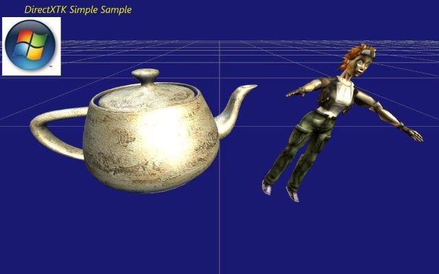

The DirectX Tool Kit is a collection of helper classes for writing Direct3D 11 C++ code for Windows Store apps, Windows 8.x Win32 desktop applications, Windows Phone 8 applications, Windows 7 applications, and Windows Vista Direct3D 11.0 applications.
This sample provides a simple demonstration of using the DirectXTK library in a Windows Store app for Windows 8.1 based on the VS 2013 Visual C++ Windows Store Direct3D app project template.
For the latest version of DirectXTK, more detailed documentation, discussion forums, bug reports and feature requests, please visit the Codeplex site.
http://go.microsoft.com/fwlink/?LinkId=248929
This is the Windows Store app version of this sample and requires VS 2013 installed on a Windows 8.1 machine to build and run. There is a Win32 desktop version of this sample, a Win32 desktop version that uses DXUT, a Windows Store for Windows 8 version of this sample, and one for Windows phone 8.
The SimpleSample demo shows how to link to the DirectXTK library and demonstrates the use of several DirectXTK components:
.SDKMESH file "Tiny.SDKMESH"

DirectXTK fully supports Windows Store apps on Windows RT (ARM) devices. However, the example
.SDKMESH used in this sample uses 32-bit indices which requires Feature Level 9.2 or greater. For Feature Level 9.1 devices such as the
Microsoft Surface, the sample will fail to run. You can resolve this by replacing the model with an
.SDKMESH model file exported with 16-bit indices, changing to use a
.CMO file, or simply commenting out the model->Draw() line in
Renderer.cpp
This sample makes use of the right-handed coordinate system used in a number of Windows Store apps samples and assumed in systems such as XNA Game Studio.
.SDKMESH files are exported assuming standard backface winding for left-handed coordinates, so this uses a clockwise winding which results in the textures being flipped in U. If wanting to make use of left-handed coordinates in this sample, change
the following source code in Renderer.cpp:
XMMatrixLookAtLH -> XMMatrixLookAtRH XMMatrixPerspectiveFovLH -> XMMatrixPerspectiveFovRH
CreateTeapot passing false CreateFromSDKMESH pass true. July 1, 2013 - Initial release
October 28, 2013 - Updated for October 2013 release of DirectXTK and VS 2013 / Windows 8.1 RTM
March 6, 2014 - Updated for DirectXTK for Audio and February 2014 release of DirectXTK
July 24, 2014 - Updated for July 2014 release of DirectXTK
November 24, 2014 - Updated for November 2014 release of DirectXTK
Where is the DirectX SDK (2013 Edition)?